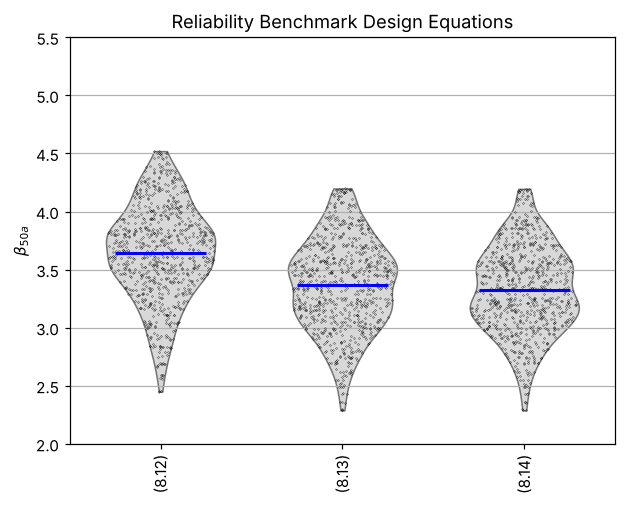
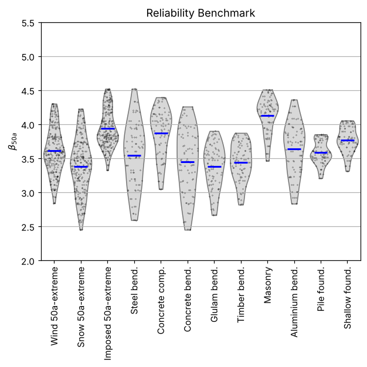
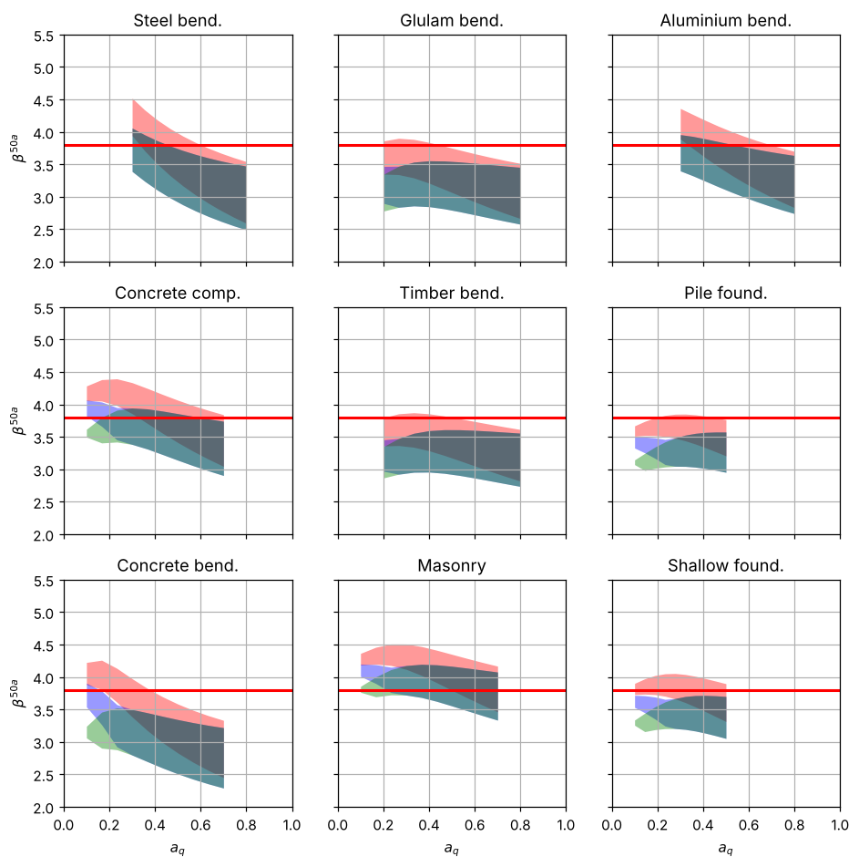
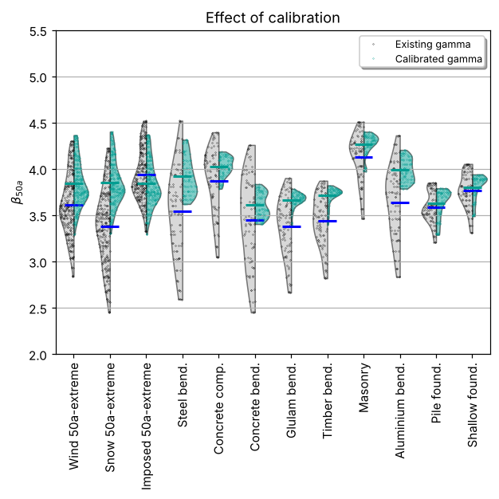
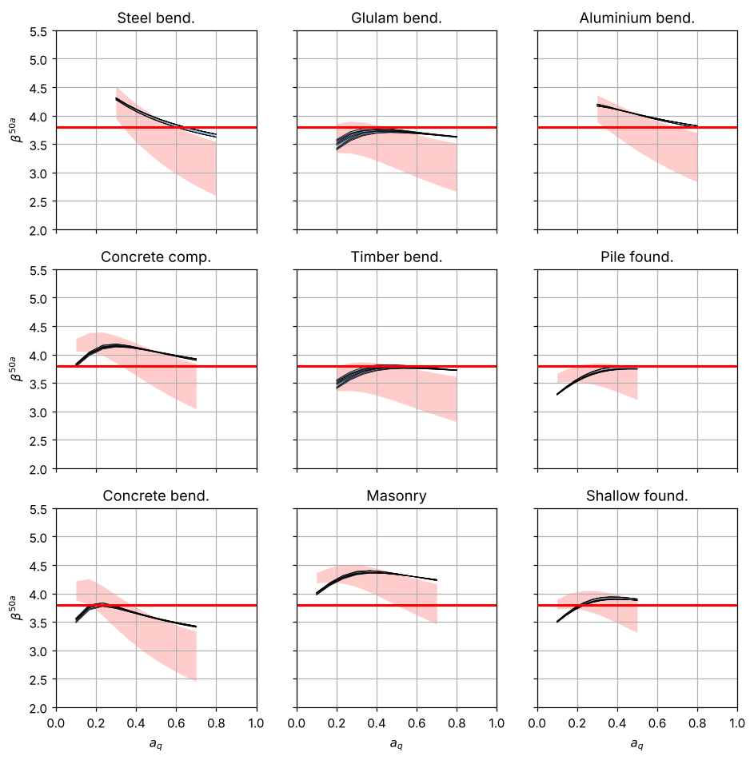
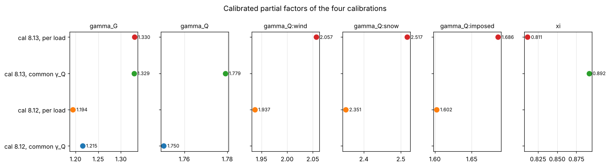

6. Results of the Eurocode study — reproduced#
This page reruns the reliability benchmark and the calibrations of the AHG study with CodeCal 2.0 and puts the numbers next to those reported in the AHG working document [Köhler et al., 2021] and in [Köhler, 2026, Köhler et al., 2023]. Everything below is computed when the notebook is executed; nothing is typed in by hand except the reference values.
All reliability indices are FORM values for a 50-year reference period, as in the study, on the grid of 10 values of \(a_Q\) × 3 values of \(a_G\) per failure mode (810 design situations) that the study’s code used. The Verification: how good is FORM here? page shows what SORM and sampling say about the FORM error.
AHG 2021 — Reliability Background of the Eurocodes
reference period 50 a, target β 3.8
9 failure modes × 3 loads × 3 a_G × 10 a_Q = 810 design situations
Failure modes:
Steel bending: Θ_R mean 1.15 CoV 0.05, R CoV 0.050 (x_k 0.830), γ_M 1.0, a_Q (0.3, 0.8), a_G (0.6, 1.0), w 0.17
Concrete compression: Θ_R mean 0.97 CoV 0.14, R CoV 0.100 (x_k 0.844), γ_M 1.5, a_Q (0.1, 0.7), a_G (0.6, 1.0), w 0.12
Concrete bending: Θ_R mean 1.03 CoV 0.07, R CoV 0.045 (x_k 0.928), γ_M 1.15, a_Q (0.1, 0.7), a_G (0.6, 1.0), w 0.4
Glulam bending: Θ_R mean 1.00 CoV 0.10, R CoV 0.150 (x_k 0.774), γ_M 1.25, a_Q (0.2, 0.8), a_G (0.6, 1.0), w 0.035
Timber bending: Θ_R mean 1.00 CoV 0.10, R CoV 0.200 (x_k 0.708), γ_M 1.3, a_Q (0.2, 0.8), a_G (0.6, 1.0), w 0.017
Masonry: Θ_R mean 1.16 CoV 0.18, R CoV 0.160 (x_k 0.760), γ_M 1.5, a_Q (0.1, 0.7), a_G (0.6, 1.0), w 0.12
Aluminium bending: Θ_R mean 1.27 CoV 0.15, R CoV 0.050 (x_k 0.850), γ_M 1.1, a_Q (0.3, 0.8), a_G (0.6, 1.0), w 0.017
Pile foundation: Θ_R mean 1.00 CoV 0.20, R CoV 0.120 (x_k 0.816), γ_M 1.5, a_Q (0.1, 0.5), a_G (0.6, 1.0), w 0.06
Shallow foundation: Θ_R mean 1.00 CoV 0.15, R CoV 0.150 (x_k 0.774), γ_M 1.4, a_Q (0.1, 0.5), a_G (0.6, 1.0), w 0.06
Variable loads:
wind: Θ_Q mean 0.97 CoV 0.26, Q Gumbel CoV 0.140 (q_k 1.083), ψ₀ 0.6, w 0.4
snow: Θ_Q mean 0.81 CoV 0.26, Q Gumbel CoV 0.200 (q_k 0.821), ψ₀ 0.5, w 0.1
imposed: Θ_Q mean 1.00 CoV 0.10, Q Gumbel CoV 0.260 (q_k 1.350), ψ₀ 0.7, w 0.5
Load-effect model uncertainty: Lognormal(mean=1, CoV=0.1), x_k=1
Permanent load (other than self-weight): Normal(mean=1, CoV=0.1), x_k=1
model built in 1.0 s
6.1. Reference values from the AHG study#
Weighted-average 50-year reliability indices with the present factors (\(\gamma_G = 1.35\), \(\gamma_Q = 1.5\), \(\xi = 0.85\), \(\psi_0\) = 0.6 / 0.5 / 0.7), and the calibrated factors for \(\beta_t = 3.8\), as reported in the November 2021 working document (design equations “6.10” and “6.10 a/b” of EN 1990:2002, which became (8.12) and (8.13) of EN 1990:2023) and in the 2026 chapter (which adds (8.14)).
AHG = {
'status quo': {'8.12': 3.74, '8.13': 3.44, '8.14': None}, # weighted averages of the Nov 2021 document (no 8.14 there)
'status quo, chapter': {'8.12': 3.74, '8.13': 3.51, '8.14': 3.48}, # as printed in the 2026 chapter (see the note below)
'crude 8.12': 3.65,
'cal 8.12, common γ_Q': {'gamma_G': 1.22, 'gamma_Q': 1.75, 'beta': 3.81},
'cal 8.12, per load': {'gamma_G': 1.19, 'gamma_Q:wind': 1.94, 'gamma_Q:snow': 2.35, 'gamma_Q:imposed': 1.60, 'beta': 3.81},
'cal 8.13, common γ_Q': {'xi': 0.89, 'gamma_G': 1.33, 'gamma_Q': 1.78, 'beta': 3.80},
'cal 8.13, per load': {'xi': 0.81, 'gamma_G': 1.33, 'gamma_Q:wind': 2.05, 'gamma_Q:snow': 2.52, 'gamma_Q:imposed': 1.69, 'beta': 3.86},
'std 8.12': {'status quo': 0.46, 'calibrated per load': 0.24},
}
AHG_TABLE_812 = pd.DataFrame( # "Average reliability indices per material and action", eq. 6.10
[[3.52, 3.17, 3.94], [3.84, 3.62, 4.15], [3.42, 3.15, 3.78], [3.34, 3.08, 3.71], [3.41, 3.17, 3.74],
[4.10, 3.92, 4.37], [3.61, 3.31, 4.00], [3.55, 3.42, 3.79], [3.73, 3.59, 3.98]],
index=[m.name for m in model.failure_modes], columns=['wind', 'snow', 'imposed'])
6.2. 1. The status quo: reliability with the present partial factors#
The same 810 design situations, designed with each of the three combination rules of EN 1990:2023 and evaluated with FORM.
pf0 = cc.START_VALUES
sweeps = {}
for eq in ('8.12', '8.13', '8.14'):
t0 = time.time()
sweeps[eq] = cc.evaluate(model, pf0, equation=eq)
print(f'eq. {eq}: {len(sweeps[eq])} situations, {time.time() - t0:.1f} s')
def stats(df):
w = df['weight']
wm = cc.weighted_mean_beta(df)
return {'weighted mean': wm, 'crude mean': df['beta'].mean(),
'weighted std': float(np.sqrt((w * (df['beta'] - wm) ** 2).sum())),
'std': df['beta'].std(), 'min': df['beta'].min(), 'max': df['beta'].max(),
'M(γ) = Σw(β−3.8)²': cc.objective(df, 3.8)}
overview = pd.DataFrame({eq: stats(df) for eq, df in sweeps.items()}).T
overview.insert(0, 'AHG 2021, weighted mean', [AHG['status quo'][eq] for eq in overview.index])
overview.insert(1, 'chapter 2026, weighted mean', [AHG['status quo, chapter'][eq] for eq in overview.index])
overview
eq. 8.12: 810 situations, 1.0 s
eq. 8.13: 810 situations, 1.0 s
eq. 8.14: 810 situations, 1.1 s
| AHG 2021, weighted mean | chapter 2026, weighted mean | weighted mean | crude mean | weighted std | std | min | max | M(γ) = Σw(β−3.8)² | |
|---|---|---|---|---|---|---|---|---|---|
| 8.12 | 3.74 | 3.74 | 3.741 | 3.646 | 0.431 | 0.416 | 2.450 | 4.520 | 0.189 |
| 8.13 | 3.44 | 3.51 | 3.445 | 3.368 | 0.404 | 0.392 | 2.288 | 4.199 | 0.289 |
| 8.14 | NaN | 3.48 | 3.384 | 3.326 | 0.385 | 0.376 | 2.288 | 4.196 | 0.321 |
The weighted averages reproduce the 2021 document: 3.74 for (8.12) and 3.44 for (8.13) — then called 6.10 and 6.10 a/b. (8.13) and (8.14) land a quarter to a third of a β-unit lower than (8.12), because the second combination (ξ on the permanent load) governs most situations and gives a smaller design value. The scatter is as reported — a standard deviation of about 0.4–0.46 for (8.12), somewhat less for the two-combination rules.
Note
The chapter manuscript prints 3.51 for (8.13) and 3.48 for (8.14). Those two values are reproduced here with ξ = 0.89 — the value that the 2021 calibration of (8.13) returned — instead of the recommended ξ = 0.85 (next cell). The table of the chapter was apparently produced with the calibrated ξ left in the start values; the 2021 document and the recommended value of EN 1990 give 3.44 and 3.38.
pf089 = cc.PartialFactors(1.35, 1.35, {'wind': 1.5, 'snow': 1.5, 'imposed': 1.5}, xi=0.89)
pd.DataFrame({eq: {'ξ = 0.85 (EN 1990)': cc.weighted_mean_beta(sweeps[eq]),
'ξ = 0.89': cc.weighted_mean_beta(cc.evaluate(model, pf089, equation=eq)),
'chapter 2026': AHG['status quo, chapter'][eq]} for eq in ('8.13', '8.14')}).T
| ξ = 0.85 (EN 1990) | ξ = 0.89 | chapter 2026 | |
|---|---|---|---|
| 8.13 | 3.445 | 3.51 | 3.51 |
| 8.14 | 3.384 | 3.48 | 3.48 |
labelled = {f'({eq})': df for eq, df in sweeps.items()}
plots.plot_beta_distribution(labelled) # the "Reliability Benchmark Design Equations" figure of the study

plots.plot_beta_distribution(sweeps['8.12']) # β per load and per failure mode, eq. 8.12

plots.plot_beta_vs_aQ(labelled) # β against a_q per failure mode: (8.12) red, (8.13) blue, (8.14) green

6.2.1. Mean β per failure mode and load (eq. 8.12)#
CodeCal 2.0 against the table of the AHG document — identical to the two decimals printed there.
tab = cc.beta_table(sweeps['8.12'])[['wind', 'snow', 'imposed']]
comparison = pd.concat({'CodeCal 2.0': tab.round(2), 'AHG 2021': AHG_TABLE_812,
'difference': (tab - AHG_TABLE_812).round(2)}, axis=1)
comparison
| CodeCal 2.0 | AHG 2021 | difference | |||||||
|---|---|---|---|---|---|---|---|---|---|
| load | wind | snow | imposed | wind | snow | imposed | wind | snow | imposed |
| Steel bending | 3.52 | 3.17 | 3.94 | 3.52 | 3.17 | 3.94 | 0.0 | -0.0 | 0.0 |
| Concrete compression | 3.84 | 3.62 | 4.15 | 3.84 | 3.62 | 4.15 | 0.0 | 0.0 | 0.0 |
| Concrete bending | 3.42 | 3.15 | 3.78 | 3.42 | 3.15 | 3.78 | -0.0 | 0.0 | 0.0 |
| Glulam bending | 3.34 | 3.08 | 3.71 | 3.34 | 3.08 | 3.71 | 0.0 | 0.0 | -0.0 |
| Timber bending | 3.41 | 3.17 | 3.74 | 3.41 | 3.17 | 3.74 | -0.0 | 0.0 | 0.0 |
| Masonry | 4.10 | 3.92 | 4.37 | 4.10 | 3.92 | 4.37 | 0.0 | -0.0 | 0.0 |
| Aluminium bending | 3.61 | 3.31 | 4.00 | 3.61 | 3.31 | 4.00 | 0.0 | 0.0 | -0.0 |
| Pile foundation | 3.55 | 3.42 | 3.79 | 3.55 | 3.42 | 3.79 | 0.0 | -0.0 | 0.0 |
| Shallow foundation | 3.73 | 3.59 | 3.98 | 3.73 | 3.59 | 3.98 | 0.0 | -0.0 | 0.0 |
6.3. 2. Calibration to \(\beta_t = 3.8\)#
Four calibrations, as in the study: one common \(\gamma_Q\) or three load-specific ones, for the single-combination rule (8.12) and for the two-combination rule (8.13) with ξ free. The target is the Eurocode target for a 50-year reference period. Each takes 20–60 evaluations of the 810 situations.
runs = {
'cal 8.12, common γ_Q': dict(free=('gamma_G', 'gamma_Q'), equation='8.12'),
'cal 8.12, per load': dict(free=('gamma_G', 'gamma_Q:wind', 'gamma_Q:snow', 'gamma_Q:imposed'), equation='8.12'),
'cal 8.13, common γ_Q': dict(free=('xi', 'gamma_G', 'gamma_Q'), equation='8.13'),
'cal 8.13, per load': dict(free=('xi', 'gamma_G', 'gamma_Q:wind', 'gamma_Q:snow', 'gamma_Q:imposed'), equation='8.13'),
}
results = {}
for name, kw in runs.items():
t0 = time.time()
results[name] = cc.calibrate(model, beta_target=3.8, verbose=False, **kw)
print(f'{name}: {len(results[name].history)} evaluations, {time.time() - t0:.0f} s')
print(' ', str(results[name]).replace('\n', '\n '))
cal 8.12, common γ_Q: 16 evaluations, 14 s
calibrated gamma_G, gamma_Q (β_t = 3.8)
gamma_G 1.215
gamma_Q 1.750
weighted-mean β 3.741 → 3.809
objective 1.366e-01 (16 evaluations)
cal 8.12, per load: 42 evaluations, 37 s
calibrated gamma_G, gamma_Q:wind, gamma_Q:snow, gamma_Q:imposed (β_t = 3.8)
gamma_G 1.194
gamma_Q:wind 1.937
gamma_Q:snow 2.351
gamma_Q:imposed 1.602
weighted-mean β 3.741 → 3.815
objective 7.208e-02 (42 evaluations)
cal 8.13, common γ_Q: 30 evaluations, 25 s
calibrated xi, gamma_G, gamma_Q (β_t = 3.8)
xi 0.892
gamma_G 1.329
gamma_Q 1.779
weighted-mean β 3.445 → 3.809
objective 1.344e-01 (30 evaluations)
cal 8.13, per load: 74 evaluations, 59 s
calibrated xi, gamma_G, gamma_Q:wind, gamma_Q:snow, gamma_Q:imposed (β_t = 3.8)
xi 0.811
gamma_G 1.330
gamma_Q:wind 2.057
gamma_Q:snow 2.517
gamma_Q:imposed 1.686
weighted-mean β 3.445 → 3.816
objective 6.410e-02 (74 evaluations)
rows = []
for name, res in results.items():
ref = AHG[name]
for p in res.free:
rows.append({'calibration': name, 'parameter': p, 'CodeCal 2.0': round(res.factors.get(p), 3),
'AHG 2021': ref.get(p), 'difference': round(res.factors.get(p) - ref.get(p), 3)})
rows.append({'calibration': name, 'parameter': 'weighted-mean β', 'CodeCal 2.0': round(res.beta_after, 3),
'AHG 2021': ref['beta'], 'difference': round(res.beta_after - ref['beta'], 3)})
pd.DataFrame(rows).set_index(['calibration', 'parameter'])
| CodeCal 2.0 | AHG 2021 | difference | ||
|---|---|---|---|---|
| calibration | parameter | |||
| cal 8.12, common γ_Q | gamma_G | 1.215 | 1.22 | -0.005 |
| gamma_Q | 1.750 | 1.75 | 0.000 | |
| weighted-mean β | 3.809 | 3.81 | -0.001 | |
| cal 8.12, per load | gamma_G | 1.194 | 1.19 | 0.004 |
| gamma_Q:wind | 1.937 | 1.94 | -0.003 | |
| gamma_Q:snow | 2.351 | 2.35 | 0.001 | |
| gamma_Q:imposed | 1.602 | 1.60 | 0.002 | |
| weighted-mean β | 3.815 | 3.81 | 0.005 | |
| cal 8.13, common γ_Q | xi | 0.892 | 0.89 | 0.002 |
| gamma_G | 1.329 | 1.33 | -0.001 | |
| gamma_Q | 1.779 | 1.78 | -0.001 | |
| weighted-mean β | 3.809 | 3.80 | 0.009 | |
| cal 8.13, per load | xi | 0.811 | 0.81 | 0.001 |
| gamma_G | 1.330 | 1.33 | -0.000 | |
| gamma_Q:wind | 2.057 | 2.05 | 0.007 | |
| gamma_Q:snow | 2.517 | 2.52 | -0.003 | |
| gamma_Q:imposed | 1.686 | 1.69 | -0.004 | |
| weighted-mean β | 3.816 | 3.86 | -0.044 |
The calibrated factors agree with the study to ±0.005 — the resolution of the optimiser (the one larger deviation, the weighted-mean β of the per-load (8.13) calibration, 3.82 against 3.86, is the only number of the document that is not reproduced; the factors themselves are): \(\gamma_G\) comes down to about 1.2, \(\gamma_Q\) goes up to 1.75 with one common factor; with load-specific factors snow gets the largest one (2.35) and the imposed load the smallest (1.60), because their characteristic values sit at very different fractiles of the 50-year maximum of Θ_Q·Q (see The probabilistic model). The weighted-mean β is 3.8 in every case — the target is met on average by construction; what the extra parameters buy is a smaller spread.
6.3.1. The spread of β before and after calibration (eq. 8.12)#
The standard deviation of β over the design situations drops from about 0.46 to about 0.24 with load-specific factors; the remaining spread is between the materials, not within them.
spread = pd.DataFrame({
'status quo': stats(sweeps['8.12']),
'calibrated, common γ_Q': stats(results['cal 8.12, common γ_Q'].sweep_after),
'calibrated, per load': stats(results['cal 8.12, per load'].sweep_after),
}).T
spread['AHG std'] = [AHG['std 8.12']['status quo'], None, AHG['std 8.12']['calibrated per load']]
spread
| weighted mean | crude mean | weighted std | std | min | max | M(γ) = Σw(β−3.8)² | AHG std | |
|---|---|---|---|---|---|---|---|---|
| status quo | 3.741 | 3.646 | 0.431 | 0.416 | 2.450 | 4.520 | 0.189 | 0.46 |
| calibrated, common γ_Q | 3.809 | 3.708 | 0.369 | 0.378 | 2.709 | 4.547 | 0.137 | NaN |
| calibrated, per load | 3.815 | 3.847 | 0.268 | 0.247 | 3.289 | 4.401 | 0.072 | 0.24 |
res = results['cal 8.12, per load']
plots.plot_beta_distribution(res.sweep_after, 'both', 3.8, ref_df=res.sweep_before) # "Effect of calibration": existing (grey, left) against calibrated (teal, right)

plots.plot_beta_vs_aQ(res.sweep_after, 3.8, ref_df=res.sweep_before) # calibrated (blue band) against the present factors (light red)

fig = plots.plot_gamma_comparison(results, title='Calibrated partial factors of the four calibrations')
fig

6.4. 3. What the study concluded#
In the words of [Köhler, 2026], condensed:
Which combination rule a country adopts matters: (8.12) gives the highest average reliability (3.74, closest to the target of 3.8), (8.13) and (8.14) are 0.3 lower with the recommended ξ = 0.85. All absolute values are conditional on the modelling assumptions; twenty years of use of all three rules without evidence of unacceptable failure rates say that the structural performance is acceptable with regard to public safety.
The more robust finding is the spread: with (8.12), β ranges from 2.4 to 4.5 (standard deviation 0.46). That is the price of a very simple format — the same \(\gamma_Q\) for wind, snow and imposed load although their model uncertainties differ — and it means a sub-optimal use of material in a sector that matters for sustainability.
A moderate increase in complexity — load-specific \(\gamma_Q\) — halves the standard deviation (0.46 → 0.24). Calibrating the material factors as well would reduce it further.
The committee’s position during the revision was that there was “no appetite for change” of the partial factors; the study documents the potential for a later recalibration.
The lesson notebooks (Lesson 5 — Calibration: choosing the partial factors) take the calibration apart step by step; the Lab mode lets you repeat any of the runs above with your own model.
summary = {name: {**{p: round(r.factors.get(p), 3) for p in r.free}, 'beta': round(r.beta_after, 3),
'objective': round(r.objective, 4), 'evaluations': len(r.history)} for name, r in results.items()}
summary['status quo 8.12'] = {'beta': round(cc.weighted_mean_beta(sweeps['8.12']), 3),
'objective': round(cc.objective(sweeps['8.12'], 3.8), 4)}
import json
with open('results_summary.json', 'w') as f:
json.dump(summary, f, indent=1)
print(json.dumps(summary, indent=1))
{
"cal 8.12, common \u03b3_Q": {
"gamma_G": 1.215,
"gamma_Q": 1.75,
"beta": 3.809,
"objective": 0.1366,
"evaluations": 16
},
"cal 8.12, per load": {
"gamma_G": 1.194,
"gamma_Q:wind": 1.937,
"gamma_Q:snow": 2.351,
"gamma_Q:imposed": 1.602,
"beta": 3.815,
"objective": 0.0721,
"evaluations": 42
},
"cal 8.13, common \u03b3_Q": {
"xi": 0.892,
"gamma_G": 1.329,
"gamma_Q": 1.779,
"beta": 3.809,
"objective": 0.1344,
"evaluations": 30
},
"cal 8.13, per load": {
"xi": 0.811,
"gamma_G": 1.33,
"gamma_Q:wind": 2.057,
"gamma_Q:snow": 2.517,
"gamma_Q:imposed": 1.686,
"beta": 3.816,
"objective": 0.0641,
"evaluations": 74
},
"status quo 8.12": {
"beta": 3.741,
"objective": 0.1889
}
}